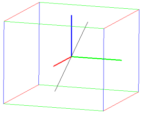
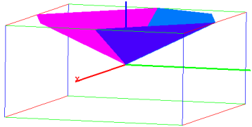

19.2.4 Convolution of two signals or functions
The convolution of two real vectors
v=[v1,…,vn] and w=[w1,…,wm] is the complex vector
z=v∗ w (note the difference between ∗ and the cross-correlation operation ⋆,
see Section 19.2.2) of length n+m−1 given by
such that vj=0 for j≥ n and wj=0 for j≥ m.
The convolution of two real functions f(x) and g(x) is the
integral
The convolution
command finds the convolution of two vectors or two functions.
Examples
To find the convolution of two lists [1,2,3] and [1,−1,1,−1], enter:
| convolution([1,2,3],[1,-1,1,-1]) |
|
| |
| ⎡
⎣ | 1.0,1.0,2.0,−2.0,1.0,−3.0 | ⎤
⎦ |
| | | | | | | | | | |
|
Compute the convolution of f(x)=25 e2 x θ(x) and
g(x)=x e−3 x θ(x), where θ is the Heaviside function:
| convolution(25*exp(2x),x*exp(-3x)) |
|
| |
| ⎛
⎝ | −5 x e−3 x−e−3 x+e2 x | ⎞
⎠ | θ | ⎛
⎝ | x | ⎞
⎠ |
| | | | | | | | | | |
|
Compute the convolution of f(t)=ln(1+t) θ(t) and
g(t)=1/√t.
| convolution(ln(1+t),1/sqrt(t),t) |
|
| |
− | ⎛
⎜
⎜
⎜
⎜
⎝ | 2 t ln | ⎛
⎜
⎜
⎜
⎜
⎝ | | ⎞
⎟
⎟
⎟
⎟
⎠ | +4 | √ | | | √ | | +2 ln | ⎛
⎜
⎜
⎜
⎜
⎝ | | ⎞
⎟
⎟
⎟
⎟
⎠ | ⎞
⎟
⎟
⎟
⎟
⎠ | θ | ⎛
⎝ | t | ⎞
⎠ |
|
|
|
|
| | | | | | | | | | |
|
In the following example convolution is used for reverberation. Assume
that the directory sounds contains two files, a dry, mono
recording of a guitar stored in guitar.wav and a two-channel
impulse response recorded in a French 18th century salon and stored in
salon-ir.wav.
Load the files:
| clip:=readwav("/path/to/sounds/guitar.wav"):;
ir:=readwav("/path/to/sounds/salon-ir.wav"):; |
Then:

Convolving the data from clip with both channels in
ir produces a reverberated variant of the recording, in
stereo.
| data:=channel_data(clip):;
L:=convolution(data,channel_data(ir,left)):;
R:=convolution(data,channel_data(ir,right)):; |
The convolved signals L and R now become the left
and right channel of a new audio clip, respectively. The
normalize option is used because convolution usually results
in a huge increase of sample values (which is clear from the
definition).
| spatial:=createwav([L,R],normalize=-3):; playsnd(spatial) |
Output: a music that sounds as if it was recorded in the same salon as the
impulse response. Moreover, it is a true stereo sound. To visualize it:

Note that the resulting audio is longer than the input (for the length
of the impulse response).